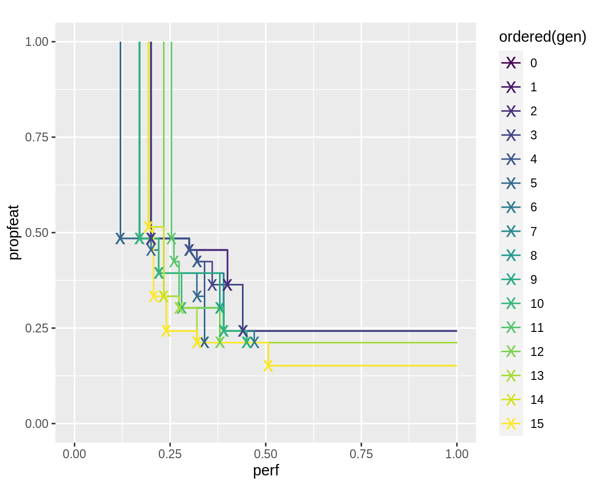
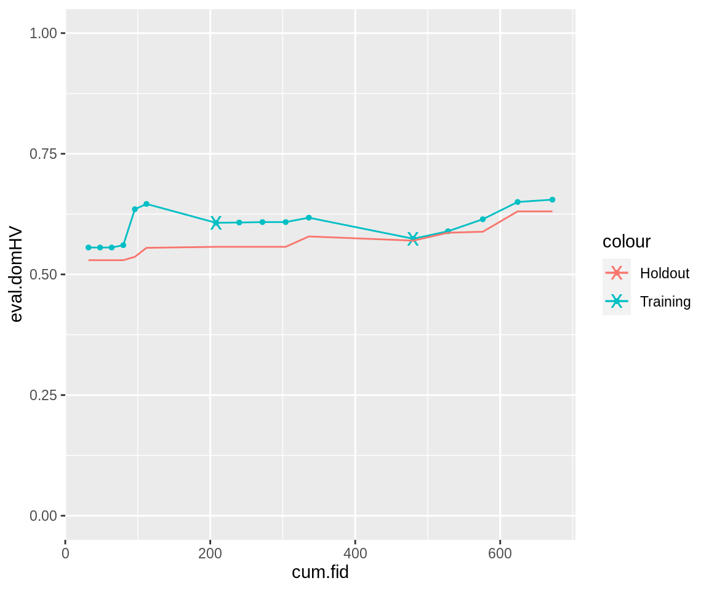
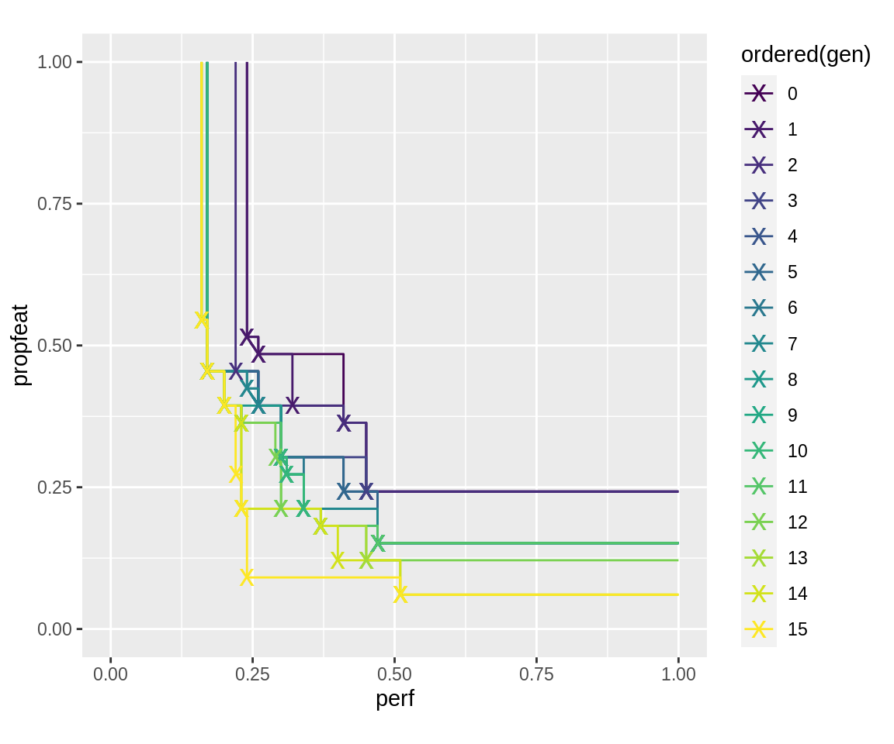
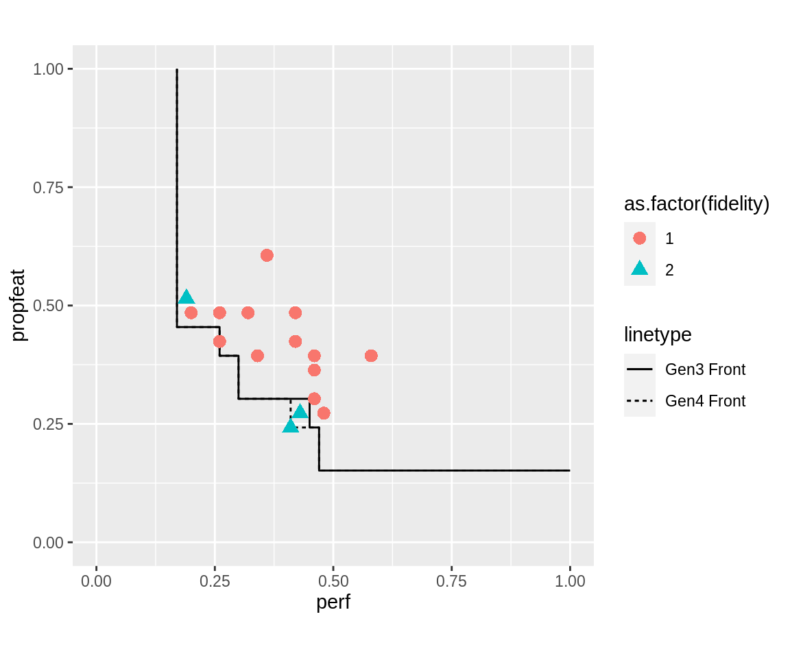
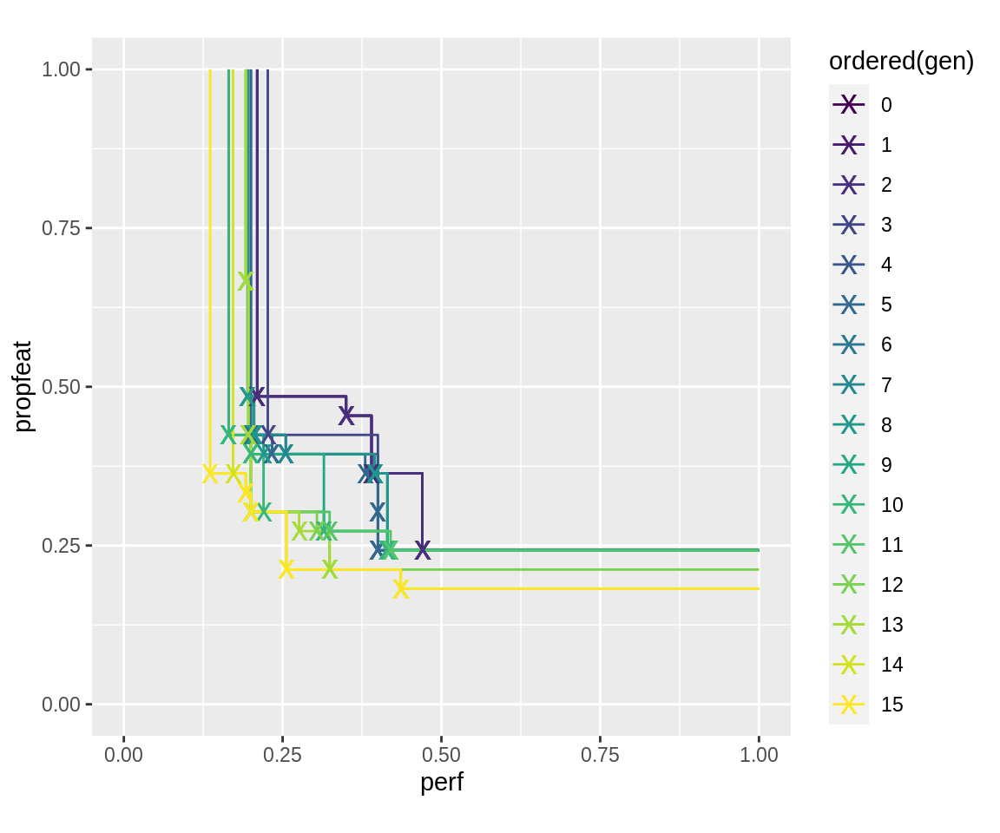
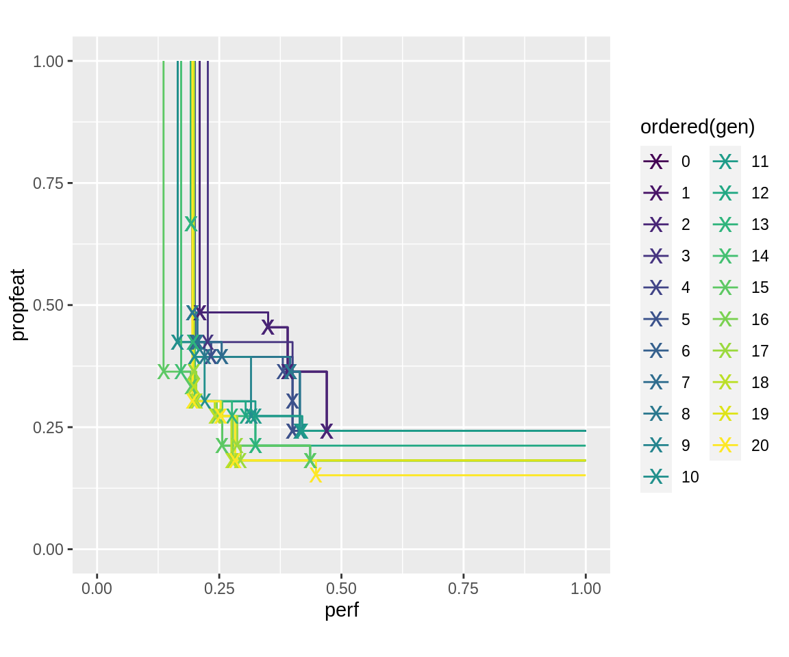

An introduction to multi-fidelity is given in J. E. Fieldsend and R. M. Everson, The Rolling Tide Evolutionary Algorithm: A Multiobjective Optimizer for Noisy Optimization Problems. In its current state, mosmafs supports two ways of performing multi-fidelity optimization: Selected by generation, and selected by dominance. Multi-fidelity by generation is simply performed by changing the fidelity of the objective function after a given number of generations. Multi-fidelity by dominance is performed by evaluating a point with low fidelity first, and then enabling high fidelity if the first evaluation suggests that the point is not dominated by any previous result.
This vignette starts where the previous vignette leaves off and expects the following preparation:
devtools::install_github("jakobbossek/ecr2") library("ecr") library("magrittr") library("ggplot2") library("ParamHelpers") library("mlr") library("mlrCPO") library("mosmafs")
task.whole <- create.hypersphere.data(3, 2000) %>% create.classif.task(id = "sphere") %>% task.add.permuted.cols(10) rows.whole <- sample(2000) task <- subsetTask(task.whole, rows.whole[1:500]) task.hout <- subsetTask(task.whole, rows.whole[501:2000]) lrn <- makeLearner("classif.rpart", maxsurrogate = 0) ps.simple <- pSS( maxdepth: integer[1, 30], minsplit: integer[2, 30], cp: numeric[0.001, 0.999]) fitness.fun.simple <- makeObjective(lrn, task, ps.simple, cv5, holdout.data = task.hout) ps.objective <- getParamSet(fitness.fun.simple) mutator.simple <- combine.operators(ps.objective, numeric = ecr::setup(mutGauss, sdev = 0.1), integer = ecr::setup(mutGaussInt, sdev = 3), selector.selection = mutBitflipCHW) crossover.simple <- combine.operators(ps.objective, numeric = recPCrossover, integer = recPCrossover, selector.selection = recPCrossover) initials <- sampleValues(ps.objective, 32, discrete.names = TRUE)
An objective function optimized with slickEcr() may have a fidelity argument which should choose the fidelity at which the function is evaluated. It can take any numeric value chosen (at another point) by the user, but it should make sense to take a weighted mean of results by this fidelity:
(obj(x, fidelity = a) * a + obj(x, fidelity = b) * b) / (a + b)A sensible usage of fidelity is to choose the number of resampling iterations through it.
The makeObjective() function will create a multi-fidelity compatible objective function if its resampling argument is a function, mapping from numeric(1) to a resampling object. The results for different fidelities should usually not be subsets of one another, because the evaluation for different fidelities is sometimes averaged over, which can lead to over-emphasis of some resampling folds.
nRes <- function(n) { makeResampleDesc("Subsample", split = 0.9, iters = n) }
We can use this function to create a multi-fidelity fitness function:
fitness.fun <- makeObjective(lrn, task, ps.simple, nRes, holdout.data = task.hout) formals(fitness.fun) #> $args #> #> #> $fidelity #> NULL #> #> $holdout #> [1] FALSE
The slickEcr() function accepts the fidelity argument, which must be a data.frame with two or three columns. For generation-wise multi-fidelity, we give it a data.frame with two columns, with the first column indicating the generation at which a certain fidelity should be used, and the second column containing the fidelity to use. To use fidelity 1 for the first five generations, then fidelity 3, for another five generations, and finally 5 for the last five, the data.frame would be
fidelity <- data.frame( c(1, 6, 11), c(1, 3, 5)) print(fidelity) #> c.1..6..11. c.1..3..5. #> 1 1 1 #> 2 6 3 #> 3 11 5
This is given to slickEcr():
run.gen.mufi <- slickEcr( fitness.fun = fitness.fun, lambda = 16, population = initials, mutator = mutator.simple, recombinator = crossover.simple, generations = 15, fidelity = fidelity)
The plot of resulting pareto-fronts notably has later generation’s pareto fronts seemingly dominated by individuals from earlier generations. This is because in the log-object, the fitness of the first generations was evaluated using the low fidelity of these generations. In later generations, these points were re-evaluated using the larger fidelity.
plot_fronts <- function(run) { fronts <- fitnesses(run, function(x) paretoEdges(x, c(1, 1))) ggplot(data = fronts, aes(x = perf, y = propfeat, color = ordered(gen))) + geom_line() + geom_point(data = fronts[fronts$point, ], shape = "x", size = 5) + xlim(0, 1) + ylim(0, 1) + coord_fixed() } plot_fronts(run.gen.mufi)

The fidelity that was used for each individuum can be extracted from its "fidelity" attribute. It can be accessed using the attr() method or the popAggregate() utility function. The runtime will scale approximately linearly (with an added constant overhead) in this case. The sum of all fidelity options used for each generation can also be inspected using the log.newinds logging object–it may represent a proxy for the computational ressources that were used. Note how the generations with changing fidelity are present twice: for re-evaluation with new fidelity, and for ordinary evaluation of new individuals.
populations <- getPopulations(run.gen.mufi$log) ind1.gen1 <- populations[[1]]$population[[1]] attr(ind1.gen1, "fidelity") #> [1] 1 attr(ind1.gen1, "runtime") #> elapsed #> 0.09976384 ind1.gen7 <- populations[[7]]$population[[1]] attr(ind1.gen7, "fidelity") #> [1] 2 attr(ind1.gen7, "runtime") #> elapsed #> 0.126887 ind1.gen15 <- populations[[15]]$population[[1]] attr(ind1.gen15, "fidelity") #> [1] 3 attr(ind1.gen15, "runtime") #> elapsed #> 0.1533511 getStatistics(run.gen.mufi$log.newinds) #> gen runtime.mean runtime.sum fidelity.sum size population #> 1 0 0.10083978 3.226873 32 32 init #> 2 1 0.10273623 1.643780 16 16 offspring #> 3 2 0.10331556 1.653049 16 16 offspring #> 4 3 0.10844688 1.735150 16 16 offspring #> 5 4 0.09916852 1.586696 16 16 offspring #> 6 5 0.09887493 1.581999 16 16 offspring #> 7 6 0.14354162 4.593332 64 32 fidelity.reeval #> 8 6 0.13711842 2.193895 32 16 offspring #> 9 7 0.15008382 2.401341 32 16 offspring #> 10 8 0.13176804 2.108289 32 16 offspring #> 11 9 0.12631964 2.021114 32 16 offspring #> 12 10 0.14509410 2.321506 32 16 offspring #> 13 11 0.18596968 5.951030 96 32 fidelity.reeval #> 14 11 0.17461410 2.793826 48 16 offspring #> 15 12 0.16876434 2.700230 48 16 offspring #> 16 13 0.16680493 2.668879 48 16 offspring #> 17 14 0.16426940 2.628310 48 16 offspring #> 18 15 0.17184141 2.749462 48 16 offspring
The cumulative fidelity up to each generation can be computed using the collectResult() function. This makes it possible to analyse progress up to a certain point of computational expenditure.
cres <- collectResult(run.gen.mufi) ggplot(cres, aes(x = cum.fid, y = eval.domHV, color = "Training")) + geom_line() + geom_point(size = 1) + geom_point(data = cres[cres$fid.reeval, ], shape = "x", size = 5) + geom_line(aes(x = cum.fid, y = true.hout.domHV, color = "Holdout")) + ylim(0, 1)

The “x” mark the points at which fidelity reevaluation occurred: There a jump downward in hypervolume is possible. Also, the plot shows a large jump in cumulative fidelity before each reevaluation, because the whole population is reevaluated at these points.
The slickEcr() fidelity argument accepts data.frames with three columns in the case that different fidelity should be used for points that lie on the pareto-front than those that, in a first evaluation, are dominated. This can be combined with generation-wise multi-fidelity, but our first example will only have one row. It evaluates simple holdout-resampling for each point, and, if the result seems to be better than previous evaluations with the same number of features, re-does the resampling with ten-times repeated holdout resampling, which results in overall 11 evaluations for this point.
fidelity <- data.frame(1, 1, 10) print(fidelity) #> X1 X1.1 X10 #> 1 1 1 10
run.dom.mufi <- slickEcr( fitness.fun = fitness.fun, lambda = 16, population = initials, mutator = mutator.simple, recombinator = crossover.simple, generations = 15, fidelity = fidelity)
plot_fronts(run.dom.mufi)

The log.newinds object will again provide information about the aggregated runtime and fidelity used. Some generations perform more high-fidelity evaluations than others (and consequently have longer runtime).
getStatistics(run.dom.mufi$log.newinds) #> gen runtime.mean runtime.sum fidelity.sum size population #> 1 0 0.1388156 4.442100 64 32 init #> 2 1 0.1259382 2.015012 19 16 offspring #> 3 2 0.1200721 1.921153 22 16 offspring #> 4 3 0.1087775 1.740440 20 16 offspring #> 5 4 0.1151526 1.842442 19 16 offspring #> 6 5 0.1040050 1.664080 16 16 offspring #> 7 6 0.1164272 1.862835 19 16 offspring #> 8 7 0.1144615 1.831384 18 16 offspring #> 9 8 0.1093364 1.749383 21 16 offspring #> 10 9 0.1142647 1.828235 18 16 offspring #> 11 10 0.1024632 1.639412 16 16 offspring #> 12 11 0.1145763 1.833220 20 16 offspring #> 13 12 0.1064261 1.702817 18 16 offspring #> 14 13 0.1092579 1.748126 19 16 offspring #> 15 14 0.1163302 1.861284 20 16 offspring #> 16 15 0.1106061 1.769697 21 16 offspring
Use the popAggregate() function to get collected information about fidelity in individuals in a generation. The following shows the fidelities used in generation 2:
popAggregate(run.dom.mufi$log, "fidelity")[[2]] #> [1] 2 2 2 2 2 2 2 1 2 2 2 2 2 2 2 2 2 2 1 1 2 1 1 1 2 2 2 2 1 1 2 2
Note that, the fidelity is 11 for some candidates, as they were promising after one holdout resampling and were additionally reevaluated with ten-times repeated holdout resampling.
Individual evaluation fidelity can be retrieved, again, from a logged individual’s attributes. The following plots the pareto-front of generation 3, and the individuals sampled for generation 4. All individuals sampled with high fidelity lie close to the pareto-front, but some may, after high-fidelity evaluation, have turned out to actually be dominated by the old generation.
gen.i <- 3 logobj <- run.dom.mufi$log.newinds stat <- getStatistics(logobj) pop <- popAggregate(logobj, c("fidelity", "fitness"), data.frame = TRUE) ngen.info <- pop[[which(stat$gen == gen.i + 1)]] front <- fitnesses(run.dom.mufi, function(x) paretoEdges(x, c(1, 1))) %>% subset(gen == gen.i) new.front <- fitnesses(run.dom.mufi, function(x) paretoEdges(x, c(1, 1))) %>% subset(gen == gen.i + 1) ggplot() + geom_line(data = front, aes(x = perf, y = propfeat, linetype = "Gen3 Front")) + geom_line(data = new.front, aes(x = perf, y = propfeat, linetype = "Gen4 Front")) + geom_point(data = ngen.info, aes(x = fitness.perf, y = fitness.propfeat, shape = as.factor(fidelity), color = as.factor(fidelity), size = 3)) + scale_size_identity() + guides(colour = guide_legend(override.aes = list(size=3))) + xlim(0, 1) + ylim(0, 1) + coord_fixed()

The two approaches can, of course, be combined. It should be noted that the initial generation, as well as each generation after a fidelity-jump, is evaluated with the “high” fidelity column number. The following, for example, evaluates generation 1 with fidelity 6, generation 6 with fidelity 11, and generation 11 with fidelity 15. In between, new points are evaluated with low fidelity first and then re-evaluated on high-fidelity if they seem to not be dominated by the previous generation. Because of this, fidelity-jumps tend to be relatively computationally expensive and should be done sparingly if at all. If unbiased.fidelity is set (the default), only an upward step in total fidelity of pareto set elements (i.e. sum of 2nd and 3rd column if three columns are given, otherwise just value in 2nd column) leads to a re-evaluation of all fidelity. It should be set whenever the expectation value of evaluated fitness does not change with changing fidelity between generations (note that it is strongly recommended that evaluations with the two fidelities in each row have the same or very close expectation values).
fidelity <- data.frame( c(1, 3, 6, 11), c(1, 2, 3, 5), c(5, 4, 8, 10)) print(fidelity) #> c.1..3..6..11. c.1..2..3..5. c.5..4..8..10. #> 1 1 1 5 #> 2 3 2 4 #> 3 6 3 8 #> 4 11 5 10
run.all.mufi <- slickEcr( fitness.fun = fitness.fun, lambda = 16, population = initials, mutator = mutator.simple, recombinator = crossover.simple, generations = 15, fidelity = fidelity)
getStatistics(run.all.mufi$log.newinds) #> gen runtime.mean runtime.sum fidelity.sum size population #> 1 0 0.1349974 4.319916 64 32 init #> 2 1 0.1034026 1.654441 16 16 offspring #> 3 2 0.1027900 1.644640 18 16 offspring #> 4 3 0.1703576 5.451442 96 32 fidelity.reeval #> 5 3 0.1419464 2.271142 34 16 offspring #> 6 4 0.1412301 2.259681 36 16 offspring #> 7 5 0.1488443 2.381508 33 16 offspring #> 8 6 0.2098481 6.715138 128 32 fidelity.reeval #> 9 6 0.2038832 3.262132 52 16 offspring #> 10 7 0.1713009 2.740814 48 16 offspring #> 11 8 0.1760516 2.816825 50 16 offspring #> 12 9 0.1874103 2.998565 51 16 offspring #> 13 10 0.1668958 2.670333 51 16 offspring #> 14 11 0.2317432 7.415781 160 32 fidelity.reeval #> 15 11 0.2139883 3.423813 65 16 offspring #> 16 12 0.2398051 3.836881 66 16 offspring #> 17 13 0.1986673 3.178677 67 16 offspring #> 18 14 0.2085184 3.336294 68 16 offspring #> 19 15 0.2021234 3.233974 67 16 offspring
plot_fronts(run.all.mufi)

When continuing finished runs using the continueEcr() functionality, it is possible to submit a new fidelity data.frame to change fidelity behaviour. Note that generations continue to count from where previous evaluations left off. Therefore, in the following example, the entry for generation 1 is ignored, the fidelity used for all new offspring is 20 and rises to 25.
fidelity.new <- data.frame( c(1, 10, 17, 19), c(11, 20, 23, 25)) print(fidelity.new) #> c.1..10..17..19. c.11..20..23..25. #> 1 1 11 #> 2 10 20 #> 3 17 23 #> 4 19 25
run.all.mufi.20 <- continueEcr(run.all.mufi, 5, lambda = 8, fidelity = fidelity.new)
getStatistics(run.all.mufi.20$log.newinds) #> gen runtime.mean runtime.sum fidelity.sum size population #> 1 0 0.1406437 4.500599 64 32 init #> 2 1 0.1082329 1.731727 16 16 offspring #> 3 2 0.1053250 1.685200 18 16 offspring #> 4 3 0.1651821 5.285826 96 32 fidelity.reeval #> 5 3 0.1355341 2.168545 34 16 offspring #> 6 4 0.1492810 2.388497 36 16 offspring #> 7 5 0.1410677 2.257082 33 16 offspring #> 8 6 0.2284782 7.311304 128 32 fidelity.reeval #> 9 6 0.1781086 2.849737 52 16 offspring #> 10 7 0.1829772 2.927636 48 16 offspring #> 11 8 0.1821415 2.914265 50 16 offspring #> 12 9 0.1674030 2.678448 51 16 offspring #> 13 10 0.1850420 2.960672 51 16 offspring #> 14 11 0.2491200 7.971839 160 32 fidelity.reeval #> 15 11 0.2116532 3.386452 65 16 offspring #> 16 12 0.2116322 3.386116 66 16 offspring #> 17 13 0.2056859 3.290975 67 16 offspring #> 18 14 0.2112479 3.379966 68 16 offspring #> 19 15 0.2399218 3.838749 67 16 offspring #> 20 16 0.7884217 25.229494 640 32 fidelity.reeval #> 21 16 0.7354913 5.883931 160 8 offspring #> 22 17 0.9127745 29.208783 736 32 fidelity.reeval #> 23 17 0.8066059 6.452847 184 8 offspring #> 24 18 0.8443415 6.754732 184 8 offspring #> 25 19 0.9973229 31.914332 800 32 fidelity.reeval #> 26 19 0.9646255 7.717004 200 8 offspring #> 27 20 0.9145475 7.316380 200 8 offspring
plot_fronts(run.all.mufi.20)
